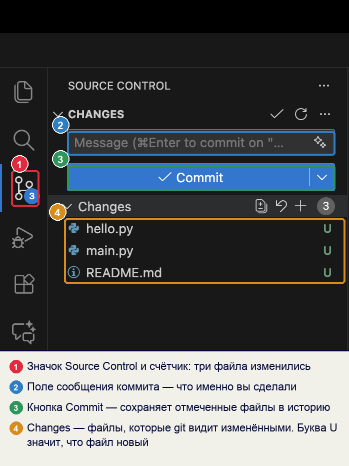
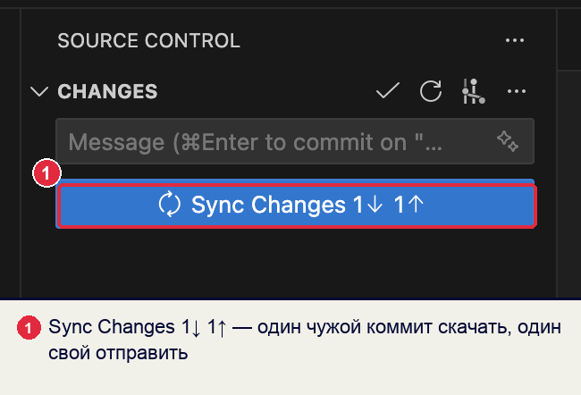

инструкция · обновлено 22.10.2026
Работа с репозиторием курса
Все работы по дисциплине хранятся в одном репозитории на GitHub. Его создаёт каждый студент из шаблона преподавателя. Здесь по шагам разобрано всё, что с ним делается: как создать, как работать за компьютером колледжа и дома, как сдать работу и как получить новые задания.
Что открыть
Найдите свою ситуацию и перейдите к шагам.
Где лежат файлы
Работа идёт с тремя копиями. Шаблон ведёт преподаватель. Ваш репозиторий на GitHub — копия шаблона, в которую вы сдаёте работы. Папка на компьютере — копия вашего репозитория, в ней вы пишете код.
Из этого следуют два правила. Работа считается сданной, когда она есть в вашем репозитории на GitHub. Файлы, которые лежат только в папке на компьютере, преподаватель не видит. Новые задания сначала приходят на GitHub, а на компьютере появляются после Sync Changes.
1Первый раз: создать репозиторий
Делается один раз в начале курса, удобнее всего в браузере. Если аккаунт на GitHub уже есть, начните с шага 2.
- Зарегистрируйтесь на GitHub
Откройте github.com/signup, введите почту, пароль и имя пользователя (логин). Подтвердите почту кодом из письма.
Логин будет в адресе каждого вашего репозитория, его увидит работодатель. Берите латиницу по имени и фамилии:
ivan-petrov,ipetrov-dev. Не подходятkrutoy2009,user123456.справа вверху на github.com стоит ваш аватар, в меню под ним — ваш логин. - Скопируйте почту для коммитов
Git подписывает каждое сохранение (коммит) почтой. Репозиторий открытый, поэтому настоящую почту увидит любой. GitHub выдаёт для этого служебный адрес.
- Аватар справа вверху → Settings → слева Emails.
- Отметьте Keep my email addresses private.
- Под этим пунктом написан адрес вида
12345678+ivan-petrov@users.noreply.github.com. Скопируйте его в заметки: он понадобится в разделах 2 и 3.
Коммиты с другой почтой не появятся на графике активности в профиле. Если указать настоящую почту при включённом пункте Keep private, GitHub не примет отправку с ошибкой GH007. - Откройте шаблон курса
github.com/MaximBytecamp/python-start-template. Справа вверху над списком файлов нажмите Use this template → Create a new repository.
Кнопку Fork не нажимайте. Форк остаётся привязан к шаблону, и GitHub не засчитывает коммиты в форке в активность профиля. - Заполните форму
Поле Что выбрать Include all branches не отмечать Owner ваш логин Repository name python-startDescription Мои работы по Python: домашние, практические, задачниквидимость Public: репозиторий должны открыть преподаватель и работодатель Нажмите Create repository.
под именем репозитория написаноgenerated from MaximBytecamp/python-start-template. Без этой строки обновления материалов приходить не будут: удалите репозиторий и создайте заново по шагу 3. - Впишите себя в README
На странице репозитория откройте файл
README.md→ значок карандаша ✎ справа вверху. ЗаменитеИмя Фамилияна свои, впишите группу. Нажмите Commit changes… → в окне оставьте Commit directly to the main branch → Commit changes.Этот файл первым видит любой, кто открывает репозиторий. Позже в таблицу «Лучшие работы» добавьте 2–3 работы, которые стоит открыть первыми.
- Добавьте темы репозитория
Справа на странице репозитория, блок About → шестерёнка ⚙. В поле Topics введите через пробел
pythonpython3learning→ Save changes. По темам репозиторий находится в поиске GitHub. - Отправьте ссылку преподавателю
Скопируйте адрес из строки браузера:
https://github.com/ваш-логин/python-start.
2Начало пары за компьютером колледжа
За этим компьютером до вас работали другие студенты. Их аккаунт может остаться в трёх местах: в браузере, в VS Code и в хранилище паролей Windows. Пока там чужой вход, ваши коммиты уйдут от чужого имени или GitHub не примет отправку. Проверка занимает пару минут, её делают в начале каждой пары.
- Браузер: войдите в свой GitHub
Откройте github.com. Если справа вверху чужой аватар: аватар → Sign out → на странице подтверждения снова Sign out (если вошли несколько аккаунтов — Sign out from all accounts). Затем Sign in и войдите в свой аккаунт.
аватар → в меню ваш логин. - VS Code: выйдите из чужого аккаунта
Значок человечка внизу левой панели. Если там чужое имя: имя → Sign Out.

- Удалите сохранённый пароль GitHub
Git запоминает вход отдельно от VS Code, в хранилище паролей системы. После выхода из VS Code запись прошлого студента остаётся, и Git отправит ваши файлы от его имени.
Windows
- Пуск → наберите Диспетчер учётных данных → откройте.
- Вкладка Учётные данные Windows.
- В списке «Общие учётные данные» найдите записи со словом
github, напримерgit:https://github.com. - Каждую раскройте стрелкой → Удалить → Да.
То же одной командой в терминале:
cmdkey /delete:git:https://github.commacOS
- Cmd + Пробел → наберите Связка ключей (Keychain Access) → откройте.
- В поиске справа вверху введите
github.com. - Записи вида «пароль интернета»: правая кнопка → Удалить.
в списке нет записей со словом github. Если записей не было с самого начала, шаг пропускается. - Склонируйте свой репозиторий
VS Code → значок Source Control слева (Ctrl + Shift + G) → Clone Repository → Clone from GitHub.

VS Code попросит войти: Allow → откроется браузер → Continue или Authorize Visual-Studio-Code → вернитесь в VS Code. Если окно предлагает войти от чужого имени, значит, в браузере не выполнен шаг 1.
В списке выберите
ваш-логин/python-start. Папку для копии укажите Документы: не «Загрузки» и не рабочий стол. На вопрос Would you like to open the cloned repository? нажмите Open.слева в проводнике VS Code видны папкиhomework,practice,problems,exams; в строке состояния внизу слева написаноmain. - Укажите Git своё имя и почту
Откройте терминал: Terminal → New Terminal (Ctrl + `). Терминал откроется в папке репозитория. Выполните три команды, подставив своё имя и почту из шага 2 раздела 1:
git config user.name "Иван Петров" git config user.email "12345678+ivan-petrov@users.noreply.github.com" git config pull.rebase false
Команды без
--globalпишут настройку только в эту папку. Следующий студент за этим компьютером её не получит. Настройка папки важнее общей настройки компьютера, поэтому имя прошлого студента в ваши коммиты не попадёт. Третья команда говорит Git, как объединять ваши коммиты с новыми материалами, пришедшими на GitHub.командаgit config user.emailпечатает вашу почту.
3Свой компьютер дома
Настройка делается один раз. Python и VS Code ставятся по главе 0 справочника.
- Установите Git
Windows
Скачайте установщик с git-scm.com/downloads/win и установите, на всех экранах нажимая Next. Перезапустите VS Code.
macOS
В терминале выполните
git --version. Если Git не установлен, система предложит поставить инструменты разработчика: нажмите Установить.в терминале VS Code командаgit --versionпечатает номер версии. - Укажите Git имя и почту для всего компьютера
Дома компьютер ваш, поэтому настройка ставится с
--globalодин раз для всех папок:git config --global user.name "Иван Петров" git config --global user.email "12345678+ivan-petrov@users.noreply.github.com" git config --global pull.rebase false
- Войдите в GitHub и склонируйте репозиторий
Как в шагах 4 раздела 2: Clone Repository → Clone from GitHub → ваш
python-start→ папка Документы → Open. - Дальше — каждый раз
VS Code при запуске открывает последнюю папку. Перед работой нажмите Sync Changes или значок ⟳ внизу в строке состояния. Клонировать заново не нужно.
4Сдать работу из VS Code
Порядок одинаковый для домашних, практических работ, задачника и контрольных. Все работы загружаются в ветку main: отдельные ветки и Pull Request не создаются.
- Заберите новое с GitHub
Source Control → Sync Changes (или ⟳ в строке состояния). Так на компьютер придут новые задания и правки, сделанные через сайт.
- Узнайте, куда класть работу
Работа Папка Пример пути домашнее задание homework/NN-тема/homework/01-variables/task_01.pyпрактическая на паре practice/NN-тема/practice/01-variables/main.pyзадача из задачника problems/chapter-глава/problems/chapter-1-3/task_07.pyтест на сайте exams/quiz-NN-…/код результата в README.mdконтрольная exams/exam-NN/exams/exam-01/task_03.pyИмя папки для ДЗ и практической работы не придумывается: откройте
homework/README.mdилиpractice/README.md, преподаватель вписывает туда строку с именем папки, когда выдаёт работу. - Создайте папку и файлы
В проводнике VS Code наведите на папку
homework→ значок New Folder… → введите имя, например01-variables. Затем на новой папке → New File… →task_01.py.Правило имени Так Не так латиница, без пробелов task_01.pyзадача 1.pyмаленькие буквы task_01.pyTask_01.pyномер двумя цифрами task_07.pytask_7.pyв файле .pyслова через_task_01.pytask-01.pyв папке слова через -01-variables01_Variablesимя говорит, что внутри task_03.pynew.py,final2.pyПример оформления папки ДЗ —
homework/00-example: в нейREADME.mdс заданием и таблицей проверки и по одному файлу на задачу. - Запустите каждый файл
Кнопка ▷ справа вверху или в терминале
python homework/01-variables/task_01.py(на macOS —python3). Сверьте вывод с примерами задания. - Сделайте коммит
Source Control → в поле Message напишите, что сдаёте. Первое слово — папка, затем номер и что сделано:
homework 01: задачи 1–3. Нажмите ✓ Commit.
Если VS Code спросит There are no staged changes to commit. Would you like to stage all your changes…?, нажмите Yes: в коммит попадут все изменённые файлы.
Работа Сообщение коммита ДЗ 1 homework 01: задачи 1–3исправление в ДЗ 1 homework 01: исправлен вывод в задаче 2задачник problems 1.3: задачи 1–5практическая practice 02: калькулятор скидкитест quiz 01: код результатаконтрольная exam 01: вариант 2, задачи 1–10 - Отправьте на GitHub
После коммита на месте кнопки появится Sync Changes 1↑: один коммит ждёт отправки. Нажмите её. Если VS Code спросит про отправку и получение коммитов, нажмите OK.

- Проверьте на сайте
Откройте свой репозиторий на github.com. Над списком файлов — ваше сообщение коммита и ваш логин, в папке
homework— новая папка.коммит на GitHub подписан вашим логином. Если там чужое имя или серый значок без аватара — раздел 8, строки 2 и 3.
5Сдать работу через сайт GitHub
Подходит, когда файлы готовы, а VS Code под рукой нет: на чужом компьютере, с телефона. Если вы работаете и в VS Code, перед следующей работой в нём нажмите Sync Changes, чтобы забрать загруженное через сайт.
Загрузить готовые файлы в новую папку
- Откройте папку вида работы
Свой репозиторий на github.com → папка
homework(илиpractice,problems,exams). - Создайте папку работы
GitHub не создаёт пустые папки, поэтому папка появляется вместе с первым файлом. Нажмите Add file → Create new file. В поле имени наберите
01-variables/README.md: знак/превращает01-variablesв папку. В тексте файла напишите задание. Нажмите Commit changes…, в сообщении —homework 01: README, оставьте Commit directly to the main branch → Commit changes. - Загрузите файлы решений
Вы оказались в новой папке. Add file → Upload files → перетащите файлы
task_01.py,task_02.py. Внизу в сообщении напишитеhomework 01: задачи 1–2→ Commit changes.Пункт Create a new branch for this commit не выбирайте: работа уйдёт в отдельную ветку, и вmainеё не будет видно.
Исправить файл, который уже лежит в репозитории
Откройте файл → карандаш ✎ → исправьте → Commit changes… → сообщение homework 01: исправлена задача 2 → Commit changes.
6Получить новые задания
Преподаватель дополняет шаблон: новые задания, конспекты, заготовки задач. Создавать репозиторий заново не нужно.
Как это устроено
В репозитории лежит файл .github/workflows/update-materials.yml. Каждый день в 06:00 по Москве GitHub по этому файлу сравнивает ваш репозиторий с шаблоном и переносит новое. В истории это коммит materials: обновление из шаблона курса от github-actions[bot].
| Что | Что происходит |
|---|---|
lectures/, materials/, docs/ | заменяются версией преподавателя |
README.md в папках homework/, practice/, problems/, exams/ | заменяются: в них таблицы выданных работ |
| новые папки заданий и заготовки | добавляются, если их у вас нет |
ваши решения, ваши README.md в папках работ, README.md в корне | не меняются |
Отсюда правило: файлы из первых двух строк не редактируйте, правка пропадёт при следующем обновлении. Свои решения пишите в своих файлах.
Забрать обновление сразу
- Запустите обновление на GitHub
Свой репозиторий → вкладка Actions → слева Обновление материалов курса → справа Run workflow → зелёная Run workflow.
- Дождитесь зелёной галочки
Через полминуты в списке появится запуск. Зелёная галочка — обновление прошло. Внутри запуска, в разделе Обновление материалов курса, перечислены добавленные и обновлённые файлы.
Красный крестик и текстшаблон не найденозначают, что репозиторий создан не кнопкой Use this template. Создайте его заново по разделу 1 и перенесите свои файлы. - Заберите на компьютер
VS Code → Sync Changes. Новые папки появятся в проводнике.
python-start: старый сначала переименуйте в python-start-old (Settings → Repository name → Rename). Перенесите свои решения по таблице ниже, затем удалите старый репозиторий: Settings → внизу Delete this repository.
| Было | Стало |
|---|---|
dz/dz-01-…/zadacha_1.py | homework/01-…/task_01.py |
praktiki/pr-01-…/ | practice/01-…/ |
zadachnik/glava-1-3/zadacha_07.py | problems/chapter-1-3/task_07.py |
kontrolnye/test-01-temy-1-1-1-3/ | exams/quiz-01-topics-1-1-1-3/ |
kontrolnye/kr-01/zadacha_03.py | exams/exam-01/task_03.py |
kontrolnye/kr-01-podgotovka/ | exams/exam-01-prep/ |
7Конец пары за компьютером колледжа
Следующий студент не должен получить доступ к вашему GitHub. Шаги обратные разделу 2.
- Отправьте всё на GitHub
Source Control: в списке Changes пусто, на кнопке нет счётчика ↑. Если есть изменения — коммит и Sync Changes по разделу 4.
- Выйдите из VS Code
Значок человечка → ваше имя → Sign Out.
- Удалите сохранённый пароль
Как в шаге 3 раздела 2: Диспетчер учётных данных Windows или Связка ключей macOS, записи со словом
github. - Выйдите из GitHub в браузере
Аватар → Sign out → на странице подтверждения снова Sign out.
- Удалите папку репозитория
Закройте папку в VS Code (File → Close Folder) и удалите
Документы/python-start. Всё отправленное хранится на GitHub, на следующей паре склонируете заново.
8Ошибки и что с ними делать
Полный текст ошибки VS Code показывает по кнопке Show Command Output или Open Git Log. Ищите строку из первого столбца.
| # | Что видно | Причина | Что делать |
|---|---|---|---|
| 1 | Make sure you configure your "user.name" and "user.email" in git | в настройках Git не заданы имя и почта | шаг 5 раздела 2 (или шаг 2 раздела 3 дома), затем снова Commit |
| 2 | Permission to ваш-логин/python-start.git denied to другой-логин или ошибка 403 | Git отправляет от имени прошлого студента: его пароль сохранён в системе | шаг 3 раздела 2, затем снова Sync Changes и войдите в свой аккаунт в открывшемся окне |
| 3 | GH007: Your push would publish a private email address | в настройке Git настоящая почта, а на GitHub включено её скрытие | укажите служебную почту: git config user.email "…@users.noreply.github.com", исправьте последний коммит: git commit --amend --reset-author --no-edit, затем Sync Changes |
| 4 | fatal: Need to specify how to reconcile divergent branches | на GitHub есть новые коммиты (обновление материалов или правка через сайт), а у вас свои; в настройках Git не указано, как их объединять | git config pull.rebase false, затем Sync Changes |
| 5 | Can't push refs to remote. Try running "Pull" first | на GitHub появились коммиты, которых нет на компьютере | нажмите Sync Changes: эта кнопка сначала забирает новое с GitHub, потом отправляет ваше. Кнопка Push только отправляет и выдаст ту же ошибку |
| 6 | в файле появились строки <<<<<<<, =======, >>>>>>> | конфликт: один и тот же файл изменён и на сайте, и на компьютере | над блоком нажмите Accept Current Change (оставить версию с компьютера) или Accept Incoming Change (с сайта), сохраните файл, Commit, Sync Changes |
| 7 | Repository not found при клонировании | VS Code вошёл в другой аккаунт или адрес набран с ошибкой | значок человечка: чьё имя? Выйдите и войдите заново по шагам 1–2 раздела 2 |
| 8 | внизу слева написано не main | случайно создана или выбрана другая ветка | нажмите на имя ветки → выберите main. Если коммиты уже сделаны в другой ветке, напишите преподавателю |
| 9 | файл лежит не в той папке или назван не по правилам | — | в проводнике VS Code: перетащите файл в нужную папку или F2 — переименовать. Коммит homework 01: файлы переименованы, Sync Changes |
| 10 | коммиты на GitHub с серым значком, на графике в профиле их нет | почта в настройке Git не привязана к аккаунту | укажите служебную почту из шага 2 раздела 1; новые коммиты свяжутся с профилем |
| 11 | в Actions красный крестик шаблон не найден | репозиторий создан форком или вручную | создайте репозиторий кнопкой Use this template по разделу 1 и перенесите файлы |


Подробнее
- Стандарт репозитория студента: почему структура и имена такие и что в репозитории смотрит работодатель.
- Шаблон python-start-template, правила сдачи в нём —
docs/SUBMIT.md. - Справочник по Git: init и clone, изменения и коммиты.